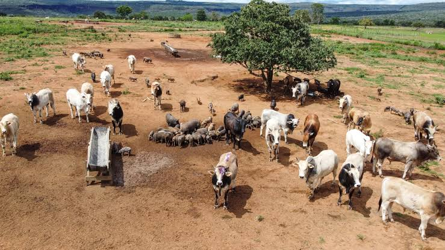

Meu primeiro postPor: Ana Antunes
Bem vindos ao meu blog! Aqui vou compartilhar como é rotina morando e trabalhando na fazenda.
Vou compartilhar sobre minha rotina morando na fazenda.

Meu primeiro postPor: Ana Antunes
Bem vindos ao meu blog! Aqui vou compartilhar como é rotina morando e trabalhando na fazenda.